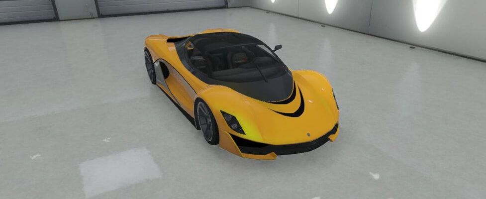

El Turismo R es un automóvil híperdeportivo que aparece en Grand Theft Auto V, como parte de la actualización de Negocios. Es fabricado por Grotti. Aparenta ser una versión mucho más moderna del Turismo visto en entregas anteriores. Posee una apariencia muy deportiva, con un parecido al Cheetah. Lleva un motor V12 de 799 caballos de fuerza y alcanza los 338 km/h.